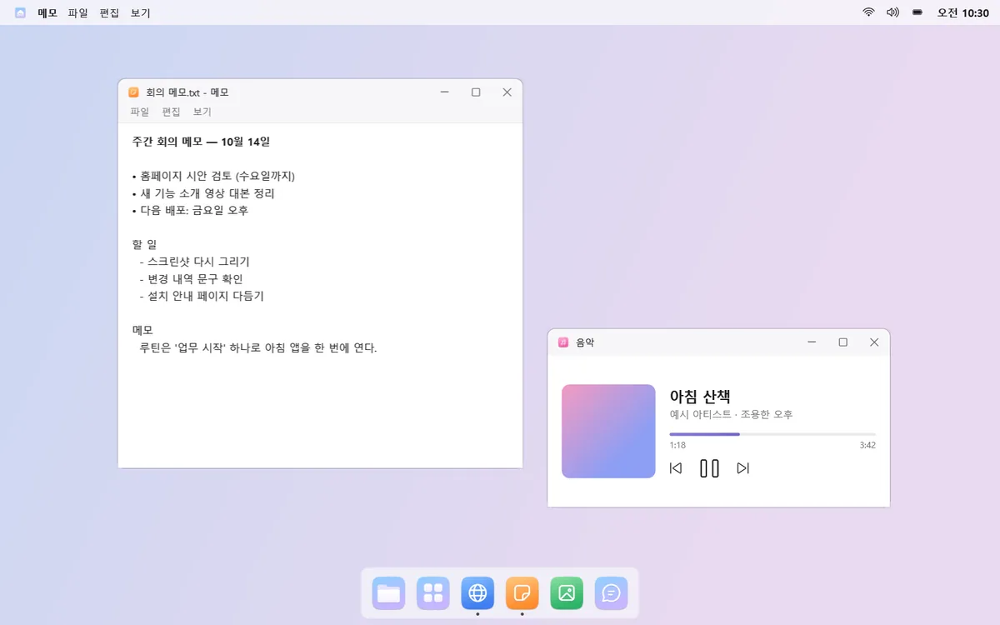
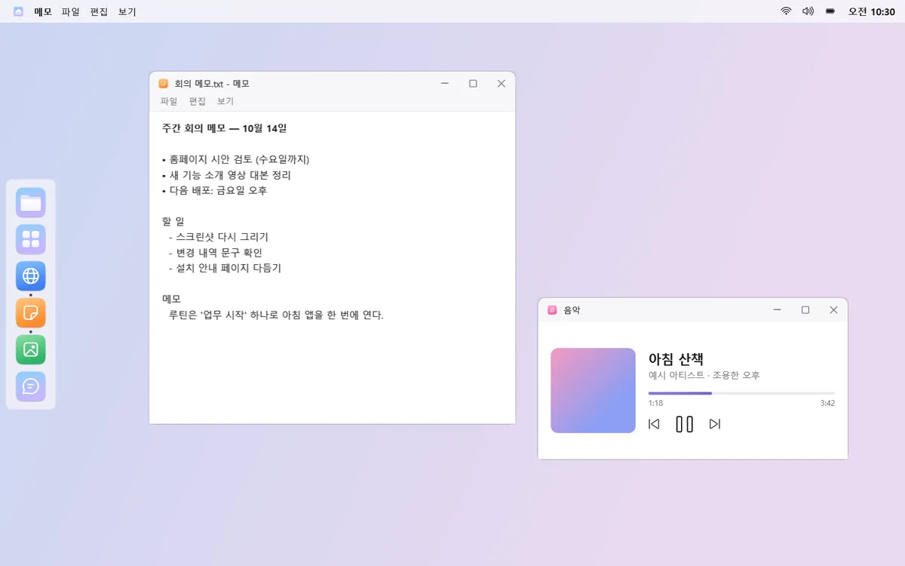
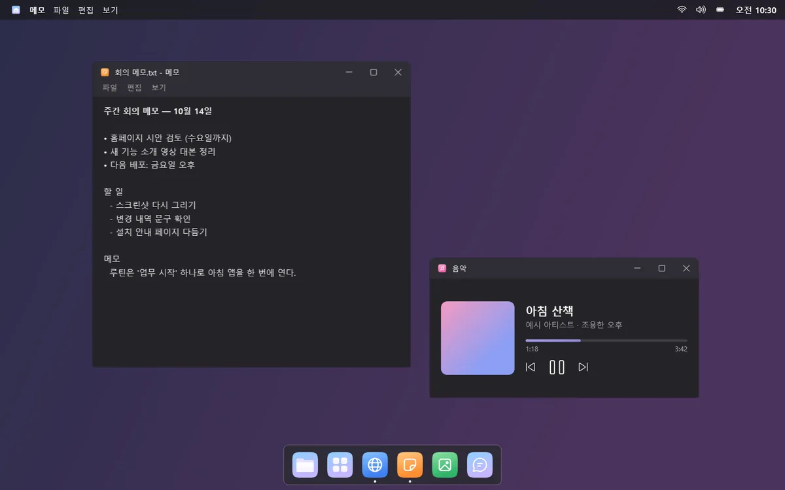
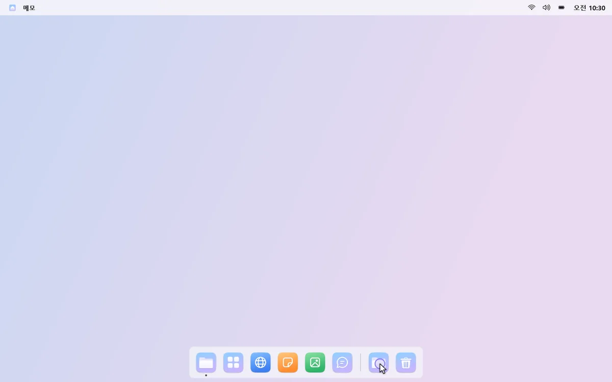
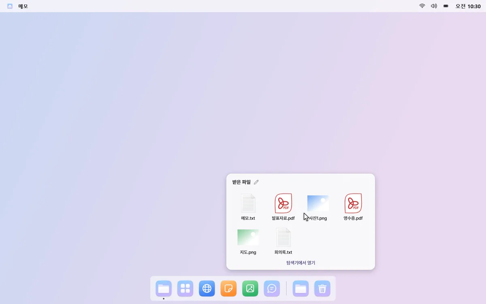
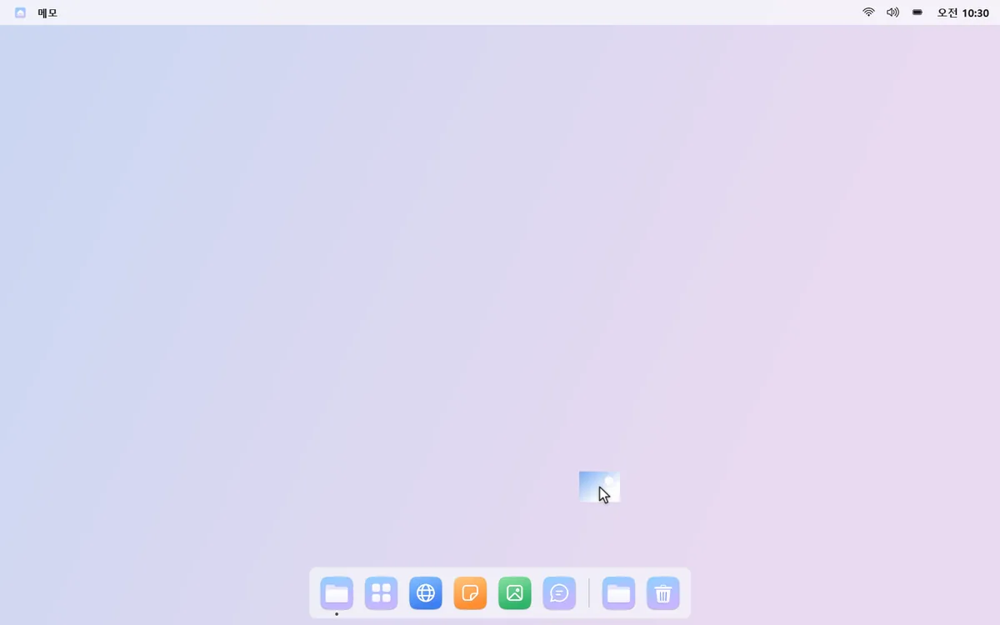
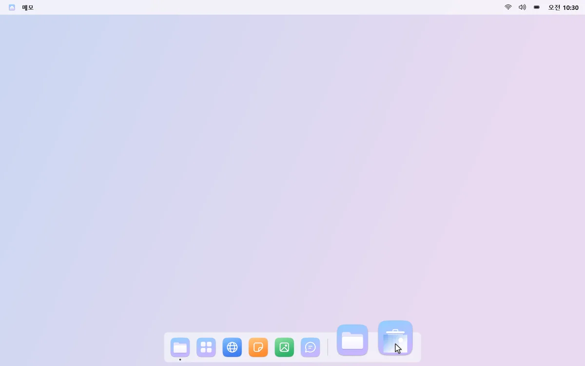
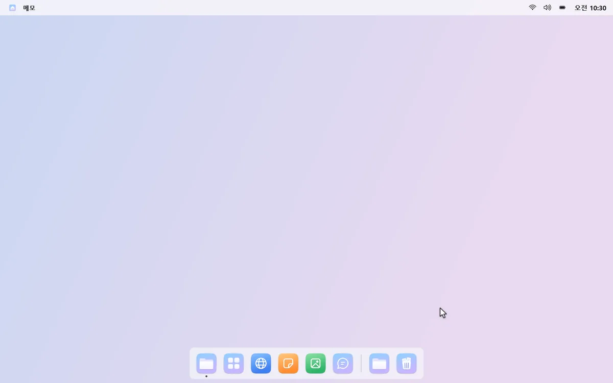
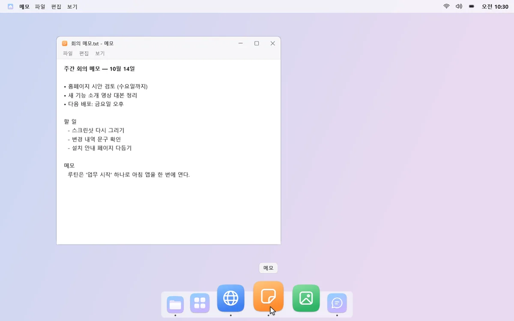
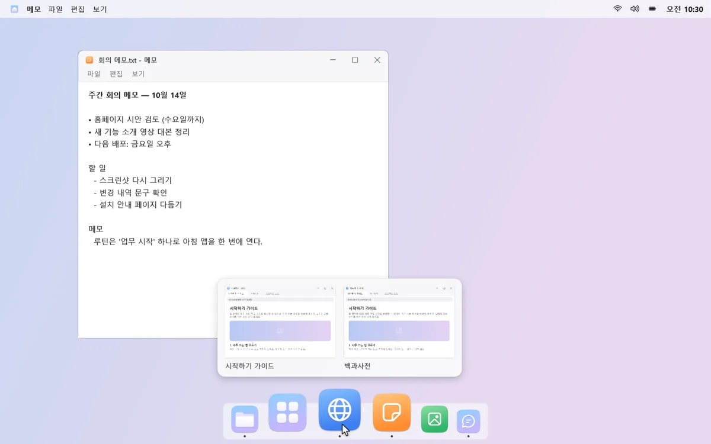

독 · 폴더 · 휴지통
아래쪽이 한결 가벼워져요
작업 표시줄 대신 자주 쓰는 앱과 폴더, 휴지통만 담은 독을 둬요. 평소엔 숨어 있다가 화면 끝에 마우스를 대면 나타나요.
01
원하는 자리, 원하는 모양
독은 아래·왼쪽·오른쪽·위 어디든 둘 수 있어요. 끌어서 순서를 바꾸고, 라이트·다크 테마와 확대 효과를 골라요.



02
다운로드 폴더를 독에
폴더를 독에 두고 누르면 안의 최근 파일이 격자로 펼쳐져요. 새 파일이 생기면 폴더 모서리에 작은 점으로 알려 줘요.



03
휴지통도 독에
파일을 독의 휴지통에 끌어 놓으면 휴지통으로 가요. 누르면 최근 버린 파일이 보이고, 오른쪽 클릭으로 되살릴 수 있어요.


04
창은 미리 보고 골라요
창이 여러 개인 앱을 누르면 미리 보기로 원하는 창을 골라요. 다른 데스크톱의 창이면 그 데스크톱으로 데려가 주고, 독에 지금 데스크톱의 앱만 보이게 할 수도 있어요.

